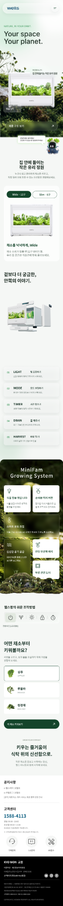
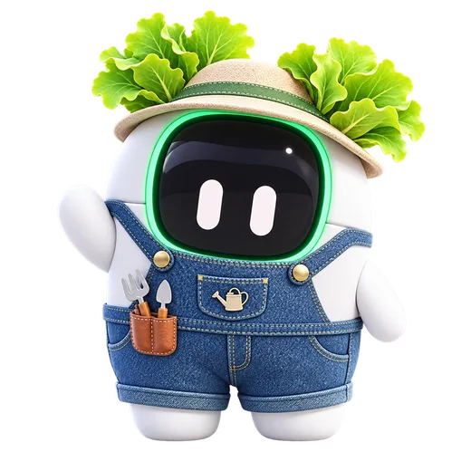
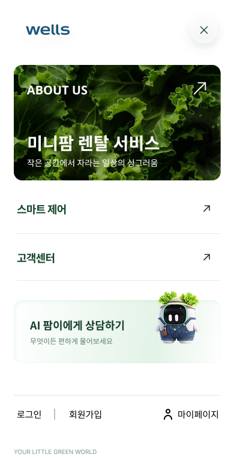
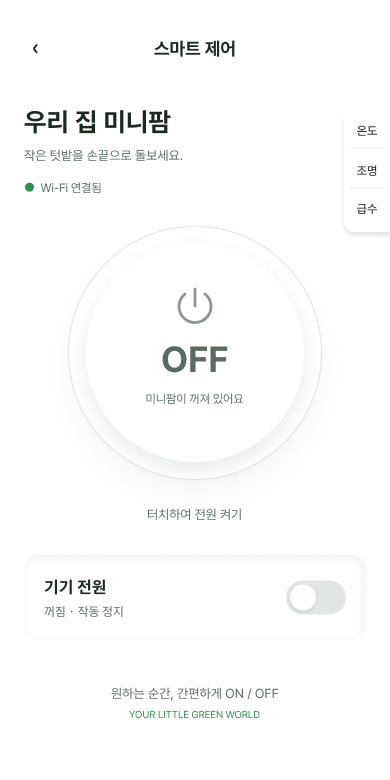
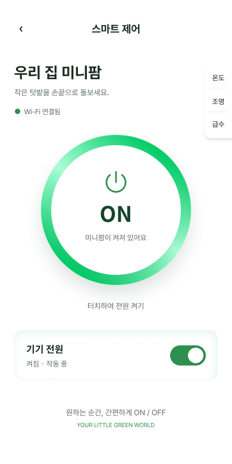
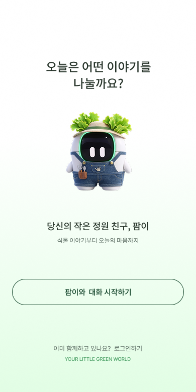
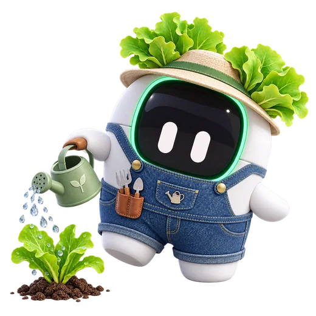
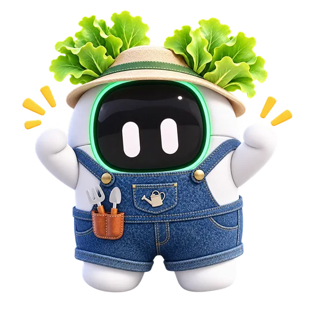

좋은 제품이
충분히 설명되지 않는다
제품의 장점과 실제 사용 방식이 기존 사이트에서 충분히 와닿지 않는다고 느꼈습니다. 그래서 단순한 정보 전달을 넘어 직접 탐색하고 이해하는 마이크로사이트를 기획했습니다.
Kyowon Wells Farm Mini — UX/UI Redesign & Experience
제품을 더 쉽게 이해하고, 직접 키우는 즐거움을 경험하도록.
건강한 일상에 대한 관심과 작은 힐링을 하나의 디지털 경험으로 연결했습니다.

제품의 기능을 넘어, 사용자가 느끼는 가치와 일상 속 활용 장면을 전달하고 싶었습니다.
제품의 장점과 실제 사용 방식이 기존 사이트에서 충분히 와닿지 않는다고 느꼈습니다. 그래서 단순한 정보 전달을 넘어 직접 탐색하고 이해하는 마이크로사이트를 기획했습니다.
먹거리의 재배 환경과 영양 균형을 중요하게 생각하는 사용자의 관점에서, 집에서 채소를 키우는 경험이 어떤 의미를 가질 수 있는지 전달하고자 했습니다.
바쁜 현대인의 일상에도 식물을 돌보고 성장 과정을 지켜보는 시간이 작은 성취감과 휴식의 계기가 될 수 있다고 생각했습니다. 이러한 경험을 더 많은 사람에게 알리고 싶었습니다.
제품 구조 이해 → 가상 재배 체험 → 생활 속 활용 장면 → 문의 행동으로 연결하는 경험을 목표로 잡았습니다.
구조와 작동 방식을 짧은 텍스트만으로 이해하기 어렵습니다.
분해·조립 스크롤과 재배 단계 체험으로 제품의 가치를 먼저 느끼도록 설계했습니다.
복잡한 구매 설득보다 작은 체험을 통해 관심과 문의를 자연스럽게 잇습니다.
첨부된 리서치 전 가상 페르소나의 문제와 기대를 바탕으로 설계 방향을 도출했습니다.
가족이 먹을 채소를 직접 키워보고 싶어요.
좁은 공간에서도 부담 없이 시작하고 싶어요.
손이 덜 가면서도 키우는 즐거움은 느끼고 싶어요.
이미지로 붙이지 않고 행동·생각·감정·페인포인트·기회를 읽을 수 있는 HTML 그리드로 재구성했습니다.

메인 흐름과 핵심 인터랙션의 역할을 구분했습니다.
SNS · 광고 · 검색으로 진입
브랜드 약속과 제품의 가치 전달
구조를 직관적으로 이해
심기부터 수확까지 체험
생활 맥락을 확인하고 결정
스크롤에 따라 제품 구조가 나뉘고 다시 결합되는 인터랙션으로 작동 원리를 시각화합니다.
Seed → Grow → Harvest 과정과 작은 상호작용으로 재배를 직접 경험하도록 합니다.
좁은 공간에도 어울리는 활용 장면을 보여주고, 문의·구매 행동으로 이어집니다.
첨부한 모바일 제작 화면을 실제 목업에 담았습니다.

명확한 메뉴와 AI 상담 진입

현재 상태를 크게 보여주는 제어 화면

색·상태 텍스트·스위치의 일관성

캐릭터를 이용한 부담 없는 대화 진입
브랜드의 청량한 느낌을 살리면서 기기 상태와 제어를 명확히 구분합니다.

GROW WITH GREEN컬러 토큰과 타이포그래피에도 생기를 한 스푼!화이트 여백, 차분한 녹색, 은은한 실버 라인을 조합해 자연스러운 시각적 위계를 만들었습니다.
8px 기본 간격·둥근 카드·명료한 상태 피드백 중심
교원 웰스팜 미니 프로젝트는 기존 화면을 예쁘게 바꾸는 데 그치지 않고, 제품 설명의 장벽을 낮추고 건강한 일상과 식물을 키우는 즐거움을 디지털 체험으로 전하고자 했습니다.
